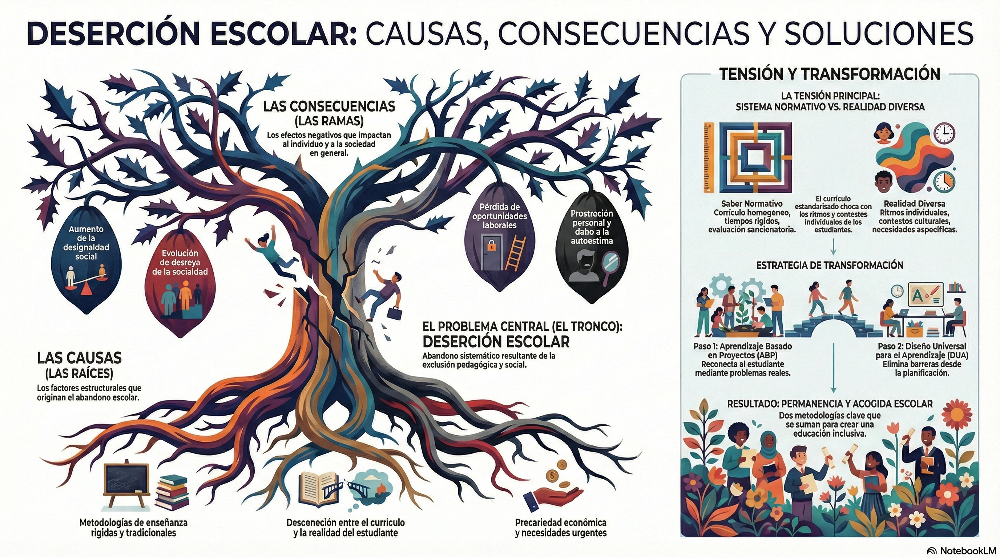

Análisis de la Deserción Escolar:
Tensiones y Relaciones
Una mirada profunda a las causas estructurales, las tensiones normativas y las estrategias de transformación pedagógica para una educación inclusiva.
Contexto del Problema
Analizar la deserción escolar implica asomarse con sensibilidad a una de las heridas más profundas del sistema educativo actual. No se trata solamente de revisar cifras frías, sino de comprender que existen proyectos de vida que quedan a mitad de camino.
Al observar el contexto educativo contemporáneo, resulta evidente que existen múltiples tensiones que tiran del estudiante en direcciones opuestas. Frecuentemente, el currículo parece viajar por una ruta teórica inmaculada mientras que los estudiantes transitan por un sendero de necesidades urgentes, generando un abismo profundo que termina por desmotivar incluso a quienes desean aprender.
Mapa Visual de la Problemática
